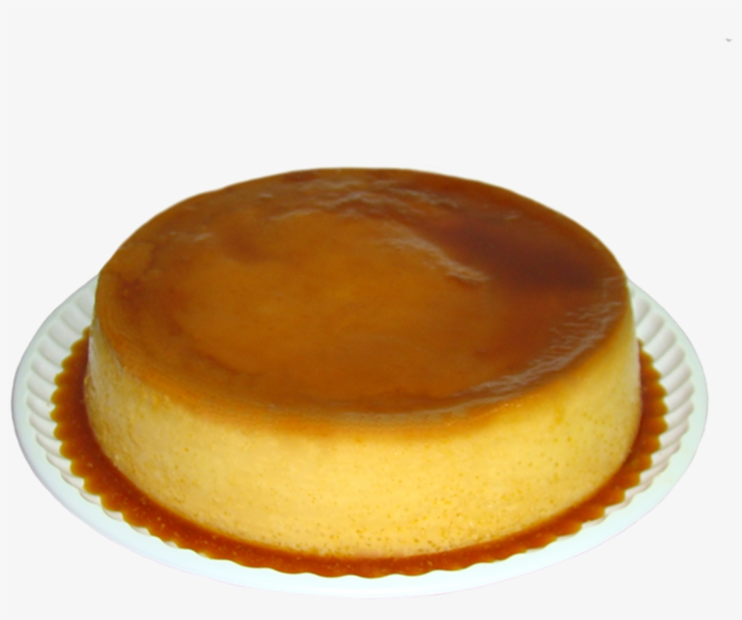

Flan Casero

El flan casero es uno de los postres más tradicionales y fáciles de hacer.
Ingredientes
- 1 litro de leche
- 10 huevos
- 200 g de azúcar
- 1 cda de esencia de vainilla
Pasos
- Precalentar el horno en mínimo.
- Hacer un caramelo con azúcar y un poco de agua. Que quede rubio claro.
- Volcar en el molde Savarín, distribuir bien y dejar enfriar.
- Mezclar, sin batir, los huevos con las yemas, el azúcar y la leche. Agregar la esencia de vainilla.
- Volcar la mezcla de flan en el molde acaramelado.
- Colocar el molde en una placa sobre un papel absorbente y cubrir hasta la mitad con agua caliente. Cubrir el molde con aluminio.
- Hornear a temperatura baja por una hora aproximadamente o hasta que el flan haya coagulado.
- Dejar enfriar y guardar en la heladera por varias horas antes de desmoldar.
Ver receta completa en portal externo |
Ir a receta de Pastel de Papa |
Volver al inicio